Chapter 4 Midwest
By Ian Boatman, Emily Pauline, and Matthew Warren
4.1 Overview
This chapter will focus on the Midwest region. This region consists of North Dakota, South Dakota, Nebraska, Kansas, Missouri, Iowa, Minnesota, Wisconsin, Illinois, Indiana, Michigan, and Ohio.
In 1990, each state had the following number of congressional districts: North Dakota: 1 South Dakota: 1 Nebraska: 3 Kansas: 4 Missouri: 9 Iowa: 5 Minnesota: 8 Wisconsin: 9 Illinois: 20 Indiana: 10 Michigan: 16 Ohio: 19
In 2016, each state had the following number of congressional districts: Northa Dakota: 1 South Dakota: 1 Nebraska: 3 Kansas: 4 Missouiri: 8 Iowa: 4 Minnesota: 8 Wisconsin: 8 Illinois: 18 Indiana: 9 Michigan: 14 Ohio: 16
Overall, the entire region experienced a decrease in number of congressional districts. This is due to the redistricting that occurs with each census. The population of the midwest decreased between these two elections, so the number of congressional districts also decreased.
Each state usually displays the following general voting tendencies: North Dakota: Republican South Dakota: Republican Nebraska: Republican Kansas: Republican Missouri: Republican Iowa: swing Minnesota: Democratic Wisconsin: Democratic, although it went Republican in the 2016 presidential election Illinois: Democratic Indiana: Republican Michigan: Democratic, although it went Republican in the 2016 presidential election Ohio: swing)
4.2 Descriptive analysis
4.2.1 Percent not White, non-Hispanic
(Ian Boatman)
In the ggridges plot, we see how the average non-white, non-Hispanic people voted Democratic in each of the Midwestern states. The left plot shows the spread in the 1992 presidential election, while the right plot shows the spread in the 2016 presidential election. In the 1992 spread, we see that the peaks from each state are very narrow, meaning that there isn’t much spread in the data. We see this in a more obvious manner in the left tmap above. The 1992 election, referenced in the left tmap above, doesn’t include much spread of the data because very few non-white, non-Hispanic people live in those areas. In the left ggridges plot, we see that all of the peaks come right before the red line, which represents the average amount of non-white, non-Hispanic people that lived in all of those states combined.
The right ggridges plot shows data from the 2016 presidential election. The peaks are generally a bit wider here, meaning that there is more spread of the data relative to the previous 1992 election. We see more obviously in the right tmap of the non-white, non-Hispanic variable. The color table has a wider distribution to it. Now, we see pockets where the percentage non-white, non-Hispanic people are heavily concentrated, such as the Chicago area in northeastern Illinois. This should tell us that this particular population has expanded and grown since the early 1990s. While the peaks of the 2016 averages do not touch the red line in the right graph of the ggridges output, we see that some of the data comes in closer contact with this average, like Kansas and Nebraska. We see these differences more clearly in the second tmap above, where southern Kansas and eastern Nebraska have more of a gradient.
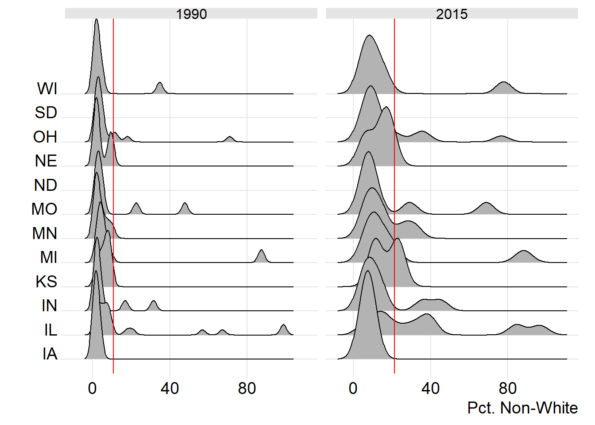
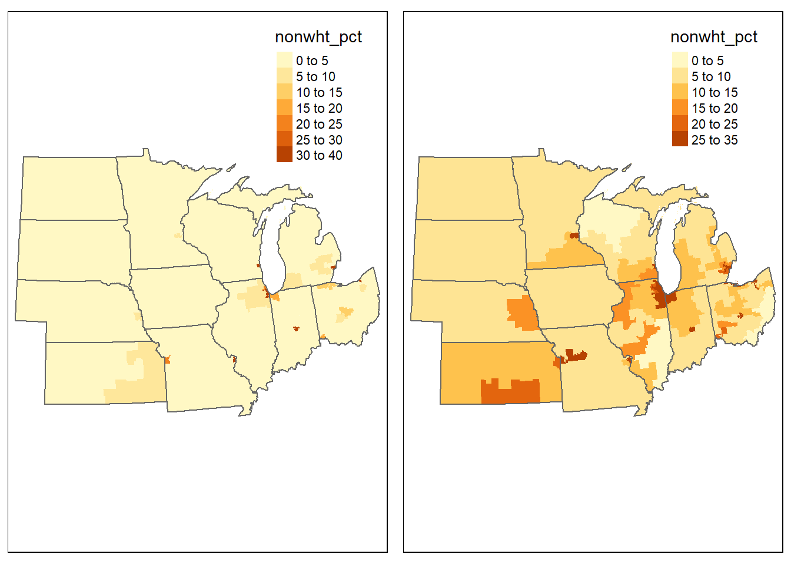
4.2.2 Median household income
(Matthew Warren)
For the median household income ridge plots for the Midwestern region, one can observe variations from state to state. The red line acts as an indication for the overall average of the entire dataset for the midwest.Between 1990 and 2015, the average overall median income is fairly similar, just north of $50,000. Wisconsin is on par with the regional average at $50,000 and is normally distributed except for a slight negative skew in both years. Ohio is normally distributed in both years and has an average similar to the regional average in 1990, but is significantly below the regional average in 2015. North Dakota and South Dakota do not have ridge plots as they only have one district each. This means there is no fluctuation within the state form median household income. For North Dakota, from 1990 to 2015, that number changes from $38,535 to $55,480, a massive increase. From 1990 to 2015, South Dakota’s median household income changes from $38,426 to $50,212. Nebraska is normally distributed and is very similar to the regional average in 2015, whereas it is far below the Midwest average in 1990. Missouri is below the regional average in median household income in both 1990 and 2015 at around $35,000-$40,000. It is normally distributed for the most part except for an outlying postive skew, likely related to St. Louis and Kansas City. Minnesota is skewed to the right and above the regional average for median household income in both 1990 and 2015. Michigan is slightly skewed to the right and slightly above the regional average in 1990, however in 2015 it is normally distributed and below the regional average. In both years the median household income for Kansas is negatively skewed and slightly below the regional average. In both 1990 and 2015, Indiana is slightly below the regional average. In 1990 it is normally distributed whereas in 2015 it is slightly negatively skewed. For Iowa, both years are normally distributed, but 1990 is well below the regional average as opposed to 2015, where it is very similar to the regional average. Illinois definitely has the most abnormal distribution of the states. It’s distribution seems slightly skewed to the left for both years and is above the regional average median household income for both. However there are several outliers. The difference between the districts is by far the largest, only comparable to Missouri and Michigan. The difference is smaller in 2015, but in 1990 the median household income fluctuated from around $25,000 to near $125,000.
Each state is unique in how median household income is represented spatially. For instance, one must consider the number of congressional districts each state possesses. There is a great disparity between the median household income of rural areas vs urban areas. For this analysis, the range starts from 0-$35,000 to account for low income areas. It then grows by $5,000 increments all the way to $70,000. Then the map accounts for the wealthiest areas beyond $70,000. The map also shows the redistricting of states from 1990 to 2015. From 1990 to 2015, North and South Dakota’s one congressional district each account for the median household income of the entire state. In 1990 both states had a significantly low median household income, but that has since change as the 2015 map shows a large increase. Nebraska’s three districts show an gradual increase in median household income from rural areas to urban areas such as Omaha. The state gradually from 1990 to 2015 is closer to the regional average. Kansas is just like Nebraska except with a few more districts and the main urban area being just outside of Kansas City near the Missouri border. Missouri’s districts have lower median household incomes than much of the rest of the Midwest in both 1990 and 2015, except for in the area around St. Louis, which is significantly higher than the rest of the state. According to the map, Iowa is fairly homogenous in regard to median household income spatially, and a little below the regional average. Minnesota has a great disparity between the lower median household incomes of rural counties in the western part of the state as opposed to very wealthy counties in the east towards the Minneapolis-St. Paul area. Wisconsin and Illinois, similarly have a large flux from the western rural counties to the large cities of Madison-Milwaukee and Chicago respectively. Illinois specifically has some of the richest and some of the poorest counties in the entire Midwest region. Indiana is fairly middle of the road on average compared to the rest of the Midwest. Indianapolis is missing from the dataset, but one can assume it would follow the trend of the rest of the region as having a greater than average median household income. Michigan and Ohio both confirm the trends previously observed in the Midwest. In both 1990 and 2015, the rural areas have significanly lower average median household incomes than urban areas. The most obvious urban areas where this takes place are Detroit, Cleveland, Columbus, and Cincinnati.
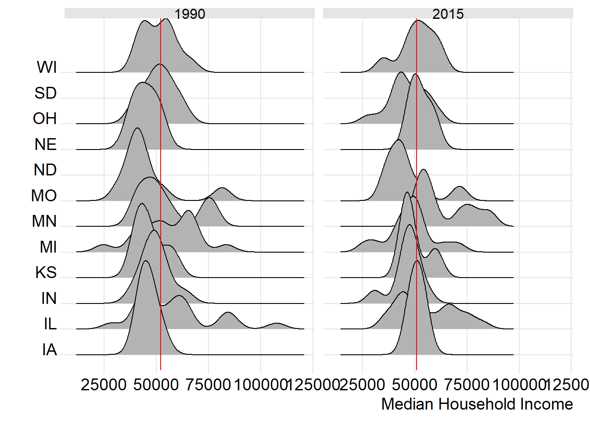
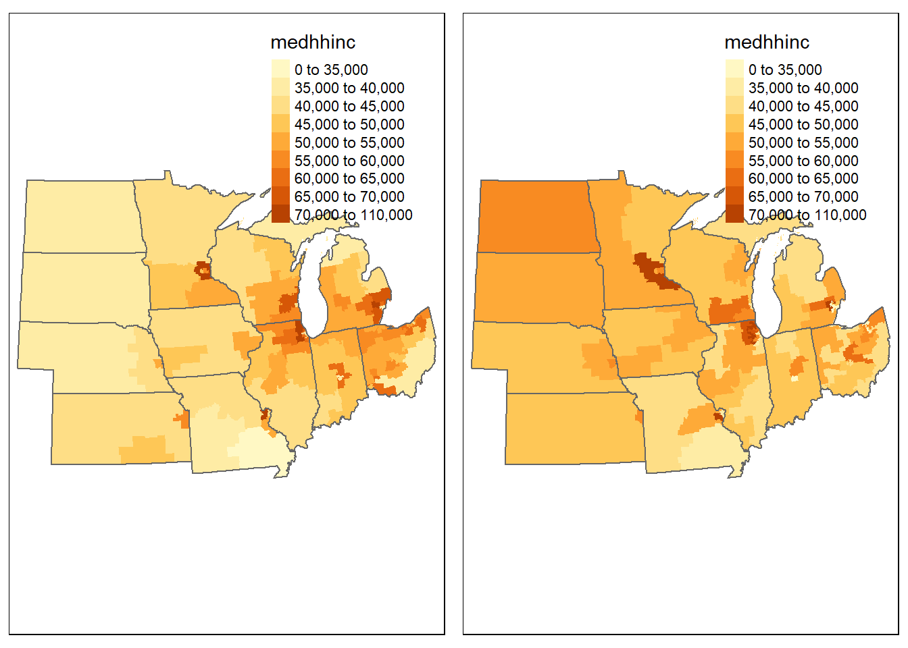
4.2.3 Percent with a bachelor’s degree
(Emily Pauline)
Analysing the ridge plots and maps below, we can begin to understand the distribution of the percent of the Midwest population that held a Bachelor’s Degree in the elections of both 1992 and 2016. We will first begin with the ridge plots. Plotted here is the density of the population that had a Bachelor’s degree, broken down by congressional districts in each state. The vertical red line represents the median value of the percent of the population with a Bachelor’s Degree. In the 1990 election, the number is somewhere around 14%. This means that for the entire Midwest region, after comparing all congresisonal districts, the middle value for the percent of people with a Bachelor’s Degree was 14%. Looking at the spikes in the ridge plots supports this number. Ridge plots plot the number of times a certain number was reported. The ridges with the highest peak represent the number that was reported the most. In the case of each state in the Midwest during the 1990 election, the majority of the peak values for each state were between 10-20%. This means that within each congressional district of the Midwest, it was most common that 10-20% of the population had a Bacheor’s Degree. There are a few states with secondary maxima in ridge heights. Nebraska, Missouri, Minnesota, Kansas, and Illinois all have secondary maxima between the 20-30% group. This means that there were more congressional districts in these states that had higher percentages of the population that had Bachelor’s Degrees. Within Illinois and Minnesota, there were a few congressional districts that reported percentages even higher than this; Minnesota had a few districts report that 35% of the population had a bachelor’s degree, and 50% of a couple districts in Illinois had a Bachelor’s Degree.
Moving forward to 2016, we can see that the numbers change a little bit. Overall, the median value of the percent of the Midwest with a Bachelor’s Degree increases from about 15% in 1992, to about 22%! This new percentage is also supported by peaks seen in the ridges. In contrast to 1992, 2016 had a larger spread of average percentages reported, so peaks are not as tall, and there is a greater spread of values across each state. Peak values of the percent of the population that had a Bachelor’s Degree for each state range from 10-40%. Overall, this shows that there was an increase of Midwest residents that received Bachelor’s degrees. Illinois and Minnesota continue to be the states that have the highest percentages of the population with a Bachelor’s Degree reported. There are now a few districts in Illinois where about 50% of the population had a Bachelor’s Degree, and a few districts in Minnesota saw a pretty large jump in the percent of people with Bachelor’s Degrees. One secondary maxima is at 40%, and another is at 55%! Between these two elections, Minnesota experienced a large increase in the percent of the population with a Bachelor’s Degree.
Looking at the maps provides a useful tool to see the spatial distribution of these reported percentages. We can use them to identify the specific districts of each of the maxima. In the map from 1990, we can see that the district in Minnesota that reported that about 40% of it’s population had a Bachelor’s Degree is located in the east-central part of the state, close to Minneapolis. In Illinois, the districts that reported the highest percentages of the population that had a Bachelor’s degree are located in the northeast part of the state, within the Chicagoland area. This can also be seen in the map from 2016. The maxima in Illinois and Minnesota are still very pronounced, but now there are other maxima visible in Missouri, Kansas, Wisconsin, and Indiana. Similar to 1990, the maxima in all of these states occur in areas of the state that are in close proximity to major cities, like St. Louis or Indianapolis. From this, we can see that in general the highest concentrations of people with Bachelor’s degrees are generally found close to larger cities.
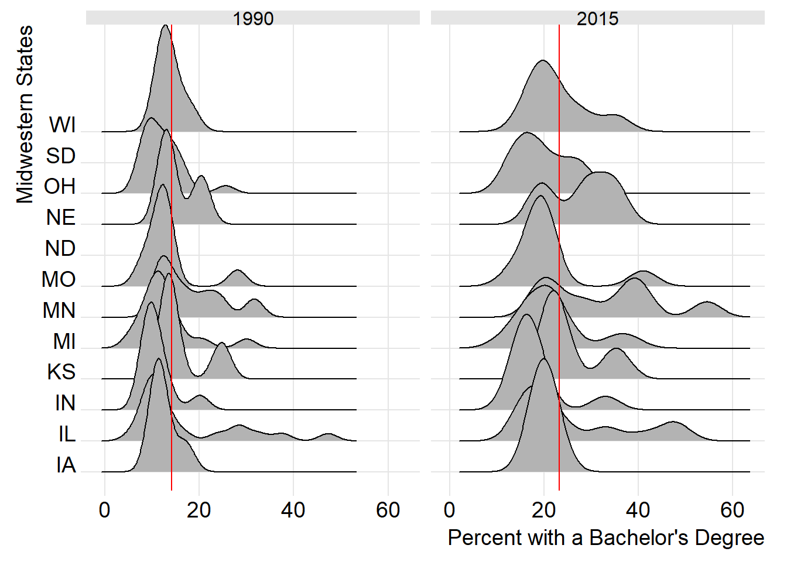
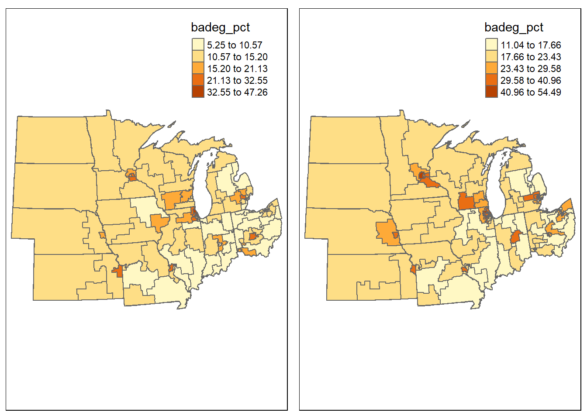
4.3 Models
4.3.1 Percent not White, non-Hispanic
(Ian Boatman)
| Model results | ||
| Pct. Non-White | ||
| 1992 | 2016 | |
| (1) | (2) | |
| nonwht_pct | 0.395*** | 0.551*** |
| (0.062) | (0.047) | |
| Constant | 47.546*** | 33.478*** |
| (1.435) | (1.467) | |
| Observations | 105 | 94 |
| R2 | 0.280 | 0.599 |
| Adjusted R2 | 0.273 | 0.595 |
| Residual Std. Error | 13.016 (df = 103) | 10.420 (df = 92) |
| F Statistic | 40.149*** (df = 1; 103) | 137.368*** (df = 1; 92) |
| Note: | p<0.1; p<0.05; p<0.01 | |
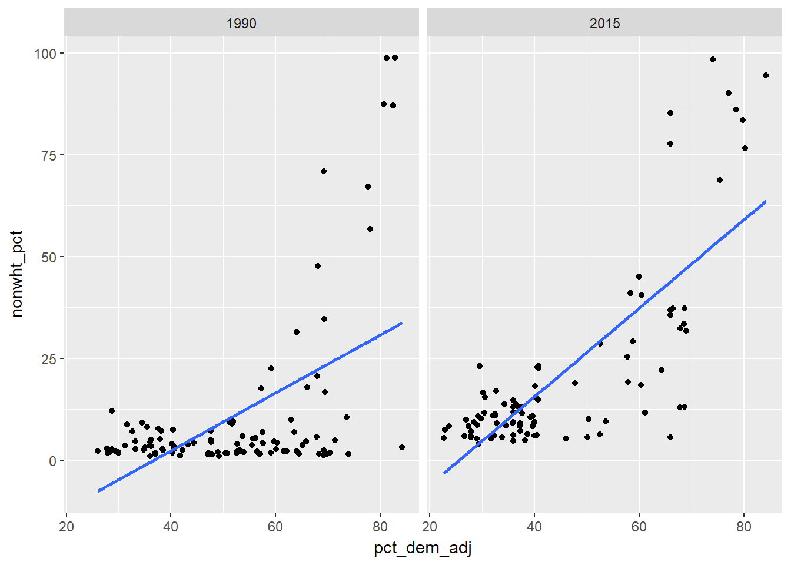
The 1992 and the 2016 presidential elections, the percent non-white, non-Hispanic variable seemed to play a pretty strong role in determining if people voted Democratic or not. In the model above, the coefficients in both years are positive (0.395 in 1992, and 0.551 in 2016), and have a decent magnitude to them. This variable plays a significant role. We see that over time, as the percentage of non-white, non-Hispanic people increases, the likelihood of that district voting Democratic in an election also increases. The r-squared value for 1992 is 28%, which means that 28% of the variance in districts voting Democratic can be explained by the percent non-white, non-Hispanic variable. This means that this particular variable is pretty significant in explaining how districts vote. The r-squared value increases to 59.9% in the 2016 presidential election, meaning that 59.9% of the variance in districts voting Democratic can be explained by the percent non-white, non-Hispanic variable. The 1992 election linear regression model, as represented by the left scatterplot above, shows that in general, districts get more Democratic as the percentage of non-white, non-Hispanic people increases. However, there are a few outliers. This could probably be atttributed to those states who don’t have high populations in their districts, such as North Dakota. The scatterplot on the right, which is from the 2016 presidential election, seems to be much more uniform, which lines up with the coefficients and r-squared values previously mentioned. The dots line up better with the linear model line, meaning that there is more certainty that how districts vote Democratic in an election depends on the percent non-white, non-Hispanic variable.
4.3.2 Median household income
(Matthew Warren)
| Model results | ||
| Pct. voting democratic | ||
| 1992 | 2016 | |
| (1) | (2) | |
| medhhinc | -0.0004*** | -0.0003** |
| (0.0001) | (0.0001) | |
| Constant | 74.539*** | 62.797*** |
| (5.747) | (7.579) | |
| Observations | 105 | 94 |
| R2 | 0.139 | 0.058 |
| Adjusted R2 | 0.131 | 0.048 |
| Residual Std. Error | 14.237 (df = 103) | 15.968 (df = 92) |
| F Statistic | 16.664*** (df = 1; 103) | 5.665** (df = 1; 92) |
| Note: | p<0.1; p<0.05; p<0.01 | |
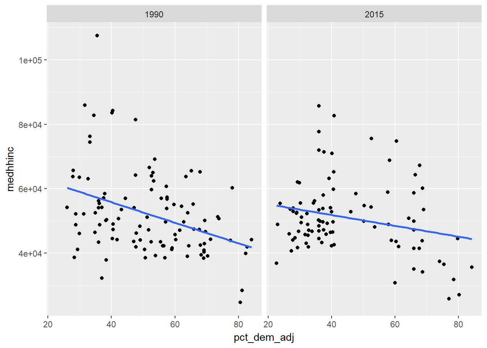 {In 1990 and 2015 the model shows a magnitude of -0.0004 and -0.0003 respectively. This shows that the median household income has virtually no impact on the percentage of district residents voting for a democratic candidate. This is honestly the lowest magnitude I have ever seen using a regression model in R. A negative coefficient suggests the direction of the model is negative as both -0.0004 and -0.0003 are negative figures. However, these numbers are so low that there is virtually no direction at all. The significance is shown using the “*" for each. These are “***" for 1990 and “**" for 2015 respectively. This shows that the relationship to the p-values garners the findings of the model very significant. The r square values are low for both 1990 and 2015. For 1990 the r-squared value is 0.139 and for 2015 it is 0.058. This shows that the model does not explain the variability of democratic voters. The scatterplot confirms the findings of the model as it shows such a slight negative trend, that it is virtually irrelevant to acknowledge. The regression line at its peak shows a slight negative trend between 0.0006 and 0.0004. In reality, this shows there is no relationship between median household income and the percent of the democratic vote in the Midwest.This is the statistical equivalent of a complete non-factor.}
4.3.3 Percent with a bachelor’s degree
(Emily Pauline)
| Model results | ||
| Pct. voting democratic | ||
| 1992 | 2016 | |
| (1) | (2) | |
| badeg_pct | -0.754*** | 0.049 |
| (0.207) | (0.190) | |
| Constant | 62.423*** | 44.051*** |
| (3.240) | (4.727) | |
| Observations | 105 | 94 |
| R2 | 0.115 | 0.001 |
| Adjusted R2 | 0.106 | -0.010 |
| Residual Std. Error | 14.440 (df = 103) | 16.447 (df = 92) |
| F Statistic | 13.319*** (df = 1; 103) | 0.067 (df = 1; 92) |
| Note: | p<0.1; p<0.05; p<0.01 | |
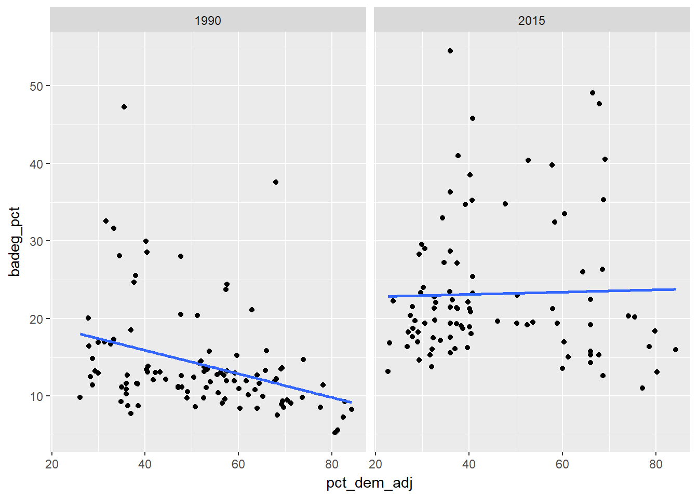 This univariate model was used to to analyze the effect that the percent of the population with a Bachelor’s Degree had on the percent of the population that voted Democratic. For 1992, the coefficient for this model is -0.754, and it is also significant, given the number of asterisks next to it. A magnitude is close to -1 means that the percentage of people with a Bachelor’s Degree does have an impact on how people vote. This negative number indicates that as the percentage of people with a Bachelor’s Degree within an election year increases by 1%, the percentage of people that vote Democratic decreases by about 75%. The r-squared value of 0.11 indicates that for the region, this variable explains about 11% of the variance. This fairly strong relationship is also seen in the scatterplot. The overall trend line slopes down, further illustrating that the higher the percentage with a Bachelor’s Degree, the lower the percentage that vote Democratic.
The model results in 2016 are a little different. The model coefficient this time is 0.049, and it is not significant. Even though this number is positive, it is very close to 0, meaning that the percentage of people with a Bachelor’s Degree has almost no role in determining the percent of the population that votes Democratic. The very small r-squared value of 0.001 also supports this. This very small value means that education level really didn’t impact how people voted in this election. This is also seen in the scatterplot. The trendline in this graph is very slightly positive, but almost completely flat. This indicates that there really isn’t a trend, or a relationship, to be defined through this model.
4.3.4 Multivariate models
| Model results | ||
| Pct. voting democratic | ||
| 1992 | 2016 | |
| (1) | (2) | |
| badeg_pct | -0.346 | 0.396* |
| (0.286) | (0.226) | |
| medhhinc | -0.0002 | -0.0002 |
| (0.0002) | (0.0002) | |
| nonwht_pct | 0.350*** | 0.521*** |
| (0.062) | (0.054) | |
| Constant | 61.055*** | 37.172*** |
| (5.817) | (6.574) | |
| Observations | 105 | 94 |
| R2 | 0.351 | 0.613 |
| Adjusted R2 | 0.332 | 0.600 |
| Residual Std. Error | 12.482 (df = 101) | 10.351 (df = 90) |
| F Statistic | 18.224*** (df = 3; 101) | 47.476*** (df = 3; 90) |
| Note: | p<0.1; p<0.05; p<0.01 | |
## badeg_pct medhhinc nonwht_pct
## 2.568845 2.665646 1.070230## badeg_pct medhhinc nonwht_pct
## 3.565563 4.019242 1.331889## badeg_pct medhhinc nonwht_pct pct_dem_adj
## badeg_pct 1.00 0.82 -0.07 0.03
## medhhinc 0.82 1.00 -0.34 -0.24
## nonwht_pct -0.07 -0.34 1.00 0.77
## pct_dem_adj 0.03 -0.24 0.77 1.00
##
## n= 94
##
##
## P
## badeg_pct medhhinc nonwht_pct pct_dem_adj
## badeg_pct 0.0000 0.4884 0.7970
## medhhinc 0.0000 0.0007 0.0194
## nonwht_pct 0.4884 0.0007 0.0000
## pct_dem_adj 0.7970 0.0194 0.0000##
## studentized Breusch-Pagan test
##
## data: model1990_2
## BP = 7.1669, df = 3, p-value = 0.06676##
## studentized Breusch-Pagan test
##
## data: model2015_2
## BP = 2.1845, df = 3, p-value = 0.5354.3.5 Residual Analysis
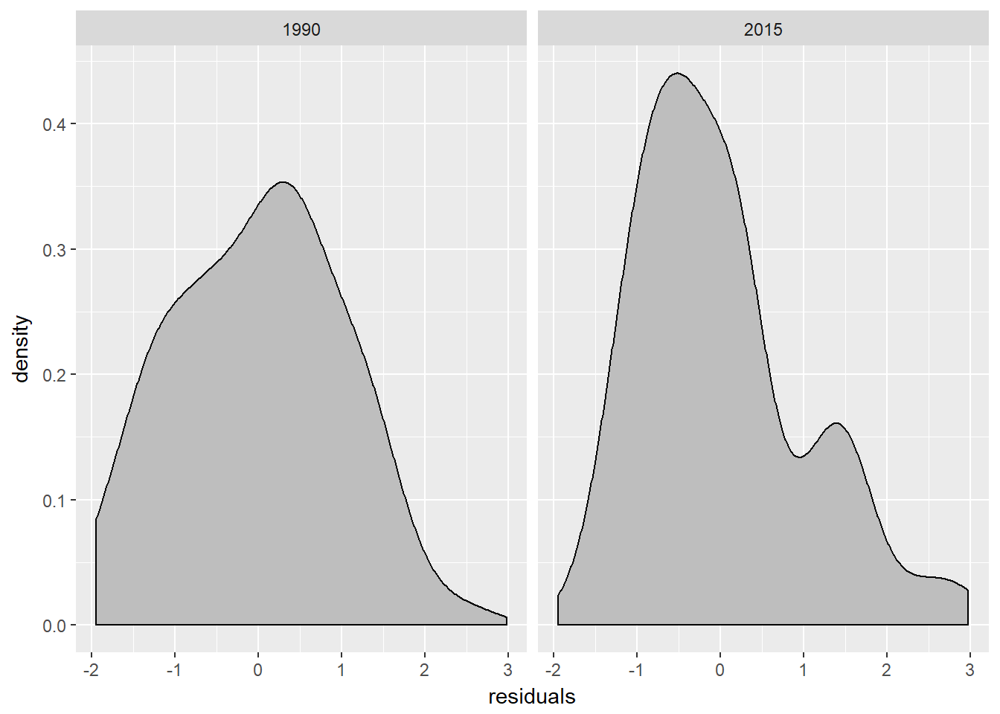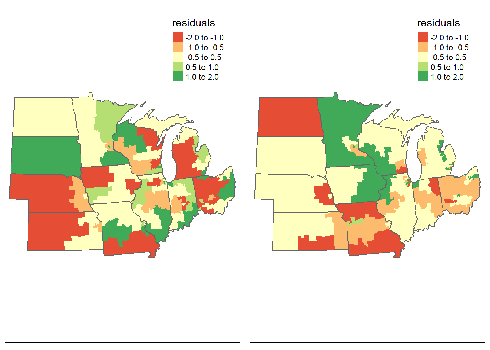
Running a multivariate regression model helps to determine which variables play the most significant role in determining election outcomes. In both 1992 and 2016, the percent non-white variable had the strongest impact on whether or not people voted Democratic in an election. In both years, the coefficient for percent non-white is positive, of moderate magnitude, and is significant. This indiates that as the percent of the population that is non-white increases, that particular district is more likely to vote Democratic in an election. The magnitude further helps to quantify the significance. In 2012, the magnitude of percent non-white was 0.35, and in 2016 it was 0.52. This indicates that as the percent of the population that is not white increases by 1%, the percent of the population that votes Democtatic increases by 35% and 52%, respectively. Within this model, the Median Household Income variable has essentially no impact on how Midwesterners vote. In both election years the coefficient was -0.0002. This negative, low magnitude, insignificant value means that there is really no relationship between Median Household Income and whether or not the district votes Democratic. The Percent with a Bachelor’s Degree variable has a magnitude of -0.346 in 1992. This value is negative and of moderate value, but the relationship is not significant. As the percent of the population with a Bachelor’s Degree increases by 1%, the percent that votes Democratic decreases by about 35%, indicating an impact of some kind on election results. However, this relationship, based on the model, is not a significant one. The opposite occurs in 2016. The magnitude in this model is 0.396; this time it is positive, of moderate value, and also significant, as denoted by the three asterisks next to the value. So, in 2016, the percent of the population with a Bachelor’s Degree also helped to explain election outcome. As the percentage with a Bachelor’s Degree increased, the percentage that voted Democratic increased by about 40%.
The results from the multivariate regression model generally follow the same results as the univariate regression models. The univariate regression model with Median household income suggests that there is no relationship between household income and election outcome, and this was supported by the Multivariate Regression. The univariate model with percent non-white had a strong impact on the percent that voted Democratic, based on coefficients and r-squared values. Percent with a Bachelor’s Degree displayed the most interesting results, as on its own it went from having a significant impact on how people voted in 1990 to having an insignificant impact in 2016. However, when put into the multivariate regression, this model became slightly significant in 2016. This means that on its own in 2016, education level didn’t have a very strong impact on how people voted, but compared to other variables, it has value in determining election outcomes.
When checking for multicollinearity, we ran a VIF test. The values after this test suggest that there isn’t really any multicollinearity with this model, since all of the values are less than 5. The only variable for concern would be household income in 2016, as it has a value of 4.02. After creating a correlation table, it does appear that median household income and percent with a Bachelor’s Degree are positively correlated, with a coefficient of 0.82. This relationship could help to explain some of the model results, like possibly why percent with a Bachelor’s Degree becomes significant in the multivariate regression model.
To test for heterosketasticity, we ran a BP test and got a p-value of 0.06 in 1992 and 0.5 in 2016. Since these values are both greater than 0.05, we fail to reject the null hypothesis that that residuals are not hetersketastic. This means that relationships between values are subject to change over time, and so the model outcome may not always be consistent. To further test the residuals, we made ridge plots and maps. The ridge plots show a fairly even distribution of residuals, although in 2015 it appears to be slightly positively skewed. From the map, there seem to be a few hotspots of residuals. In 1992 there are areas of high residual values in South Dakota, west-central Missouri, northwestern Wisconsin, and east-central Ohio. Low residual values are found in Nebraska, western Kansas, southern Missouri, northeastern Wisconsin, western Michigan, and western Ohio. These values seem to be fairly spread out, and all appear to cancel each other out, so it doesn’t seem like there is one area in particular that is causing problems. In 2016 there are there are high residual values in Minnesota, western Wisconsin, eastern Iowa, and northwestern Illinois. There are low residual values in North Dakota, Missouri, southern Kansas, and northeastern Indiana. Again, it appears that there are no significant outliers that would impact this model. In contrast to 1992, the outliers of residuals in 2016 appear to be more clustered together. For example, values of higher residuals appear to be concentrated in the area previously mentioned. In 1992 residual values appear to be more spread out. In general, there don’t appear to be any significant issues with this model.
4.4 Summary
This analysis revealed several relationships regarding voting outcome in the Midwest. On its own, Median Household income appears to have had no impact on either election. The percent of the poulation that is not white had some impact in 1992, but it was a lot stronger in 2016. Percent with a Bachelor’s Degree had a fairly strong negative impact in 1992, but no impact in 2016. In the combined model, the variable that had the strongest impact on voting outcomes in both elections was the percent non-white variable; as the percent of the population that is non-white increased, so did the percent of the population that voted Democratic. Percent with a Bachelor’s Degree also displayed some amount of significance in 2016 when compared to other variables. As the percent of the population with a Bachelor’s Degree increased, the percent of the population that voted Democratic increased as well. In conclusion, the census data variable that has the largest impact on how Midwesterners vote is race.